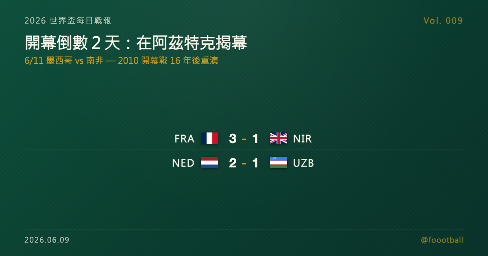

開幕倒數 2 天：世界盃將在阿茲特克揭幕——史上第一座『三辦』球場
2026 世界盃 6 月 11 日在墨西哥城阿茲特克球場揭幕，由地主墨西哥對南非——正是 2010 年世界盃開幕戰（當年 1-1）的重演。阿茲特克也將成為史上第一座三度舉辦世界盃、三度承辦開幕戰的球場。

2026 世界盃每日戰報 Vol. 009
§1 即時比分戰報
開幕只剩 2 天，6/8 各隊踢完世界盃前最後的熱身賽。沒有冷門，倒是兩位射手包辦版面：法國的 Olise 在里爾上演帽子戲法、為 Deschamps 的主場告別作收，荷蘭的 Gakpo 則用兩記點球在紐約驚險贏球。以下為這 2 場：
| 賽事 | 比分 | 場館 | 焦點 |
|---|---|---|---|
| 🇫🇷 法國 — 🇬🇧 北愛爾蘭 | 3 - 1 | 里爾 Stade Pierre-Mauroy | Olise 43'、49'、74' 帽子戲法；Kelly 64'（北愛）；Deschamps 主場告別 |
| 🇳🇱 荷蘭 — 🇺🇿 烏茲別克 | 2 - 1 | 紐約 Icahn Stadium | Gakpo 兩記點球；Til 終場前紅牌、荷蘭 10 人；Sergeev 補時扳平（烏） |
兩場都是純熱身性質，重點不在比分本身，而在它們正式替「賽前」畫下句點——再過兩天，真正的世界盃就要在墨西哥城揭幕，這也是 §4 今天要談的主角。
§2 排行榜區：三個地主，三場開幕——揭幕週對戰表
2026 是史上第一屆「三地主」世界盃，開幕也跟著拆成接力的兩天。6/11 由墨西哥在阿茲特克打頭陣，6/12 換加拿大與美國登場，48 隊的旅程正式開始：
| 開幕場次 | 開球（台北時間） | 對戰 | 場館 |
|---|---|---|---|
| 揭幕戰 | 6/12 03:00 | 🇲🇽 墨西哥 — 🇿🇦 南非 | Mexico City Stadium（Estadio Azteca） |
| A 組同日 | 6/12 10:00 | 🇰🇷 南韓 — 🇨🇿 捷克 | Estadio Guadalajara（Estadio Akron） |
| 加拿大開幕 | 6/13 03:00 | 🇨🇦 加拿大 — 🇧🇦 波士尼亞 | Toronto Stadium（BMO Field） |
| 美國開幕 | 6/13 09:00 | 🇺🇸 美國 — 🇵🇾 巴拉圭 | Los Angeles Stadium（SoFi Stadium） |
墨西哥所在的 A 組由墨西哥、南非、南韓、捷克組成；揭幕戰墨西哥對南非，剛好是 2010 年世界盃開幕戰的重演——詳見 §4。
§3 賽事摘要
- 法國 3-1 北愛爾蘭：拜仁慕尼黑的 Olise 大爆發，上下半場交界連入兩球（43'、49'），第 74 分鐘再添一記弧線球完成帽子戲法。北愛由 Kelly 在第 64 分鐘扳回一城。這場是法國前進北美前的最後一場熱身，也是總教練 Deschamps 在法國本土的告別作——他將在本屆世界盃後卸任，里爾全場為他送行。
- 荷蘭 2-1 烏茲別克：Gakpo 迎來個人第 50 場國家隊出賽，用兩記點球替荷蘭搶下勝利，但過程並不輕鬆。終場前 Til 被紅牌罰下，荷蘭一度 10 打 11，烏茲別克的 Sergeev 在補時扳平；直到 Gakpo 再次主罰命中，荷蘭才驚險全身而退。這是 Koeman 麾下荷蘭的賽前最後一測，暴露出不少人員調度的隱憂。
§4 焦點觀察｜開幕在阿茲特克：一座寫進歷史的球場，一場 16 年後的重演
再過兩天，2026 世界盃就要正式開踢。而所有故事的起點，是一座球場——墨西哥城的阿茲特克球場（Estadio Azteca）。台北時間 6 月 12 日凌晨 3 點，地主墨西哥將在這裡迎戰南非，為這屆史上規模最大的世界盃揭幕。
先說這場開幕戰本身，它其實是一場「重演」。 16 年前的 2010 年南非世界盃，開幕戰正是南非對墨西哥，最終 1-1 收場——那也是世界盃史上第一次在非洲大陸開踢。那場比賽，南非的 Tshabalala 在下半場轟進一記左腳世界波，那是整屆 2010 世界盃的第一顆進球，配上他與隊友即興跳起的慶祝舞步，成了傳遍全球、至今仍被一再重播的開幕戰經典畫面。如今攻守易位，換成墨西哥當地主、南非作客，兩隊在世界盃舞台上的再次交手，竟以這種「鏡像」的方式重來一遍。對老球迷來說，這個對戰本身就帶著一層時光交錯的味道——當年那記讓全世界記住南非的進球，會不會在 16 年後的阿茲特克，又被誰續寫一段？
但真正的主角，是阿茲特克這座球場。 6/11 這一戰，會讓阿茲特克正式成為史上第一座三度舉辦世界盃的球場——1970、1986，再到 2026。不只如此，它也會是史上第一座三度承辦世界盃開幕戰的球場，這是任何其他場館都不曾達成的紀錄。在這之前，它早已承辦過兩次世界盃決賽：1970 年那場 Brazil 4-1 義大利、Pelé 捧盃的經典，以及 1986 年 Maradona「上帝之手」與「世紀進球」之後、阿根廷 3-2 西德的決賽，都發生在這片草皮上。可以說，過去半世紀世界盃最具標誌性的幾個畫面，幾乎都跟這座球場綁在一起。如今它再一次站上開幕的中央，本身就是世界盃送給球迷的一份情懷。
這屆的開幕，也跟過去任何一屆不一樣——因為它有三個地主。 2026 由美國、加拿大、墨西哥共同主辦，這是世界盃史上第一次由三個國家聯合舉行，參賽隊伍也從 32 隊擴編到 48 隊。三地主的安排，讓「開幕」這件事被拆成了接力：6/11 墨西哥在阿茲特克打頭陣，同一天 A 組的南韓對捷克也在瓜達拉哈拉登場；隔天 6/12，換加拿大在多倫多的 Toronto Stadium（BMO Field）對波士尼亞、美國在洛杉磯的 Los Angeles Stadium（SoFi Stadium）對巴拉圭。短短兩天，三個地主、四場揭幕級賽事接連上演，等於把開幕的氣氛拉長成一個週末。
這也是一屆「規則重寫」的世界盃。 48 隊被分成 12 個小組、每組 4 隊，小組前兩名再加上 8 個成績最好的第三名、共 32 隊晉級——這代表淘汰賽前面多了一輪全新的「32 強賽」。整屆賽事將從上屆的 64 場暴增到 104 場，從 6/11 一路打到 7/19、橫跨 39 天，是史上場次最多、時間也最長的一屆；16 座主辦城市分布在美國（11 座）、墨西哥（3 座）與加拿大（2 座）。換句話說，6/11 在阿茲特克吹響的這一聲哨，啟動的是一台比以往任何一屆都更龐大的機器——而它選擇從這座最有歷史重量的球場開始。
而把開幕放在墨西哥，本身也有它的意義。 美加墨三地主裡，墨西哥是足球氛圍最濃烈、世界盃情結最深的一個；阿茲特克的看台向來以山呼海嘯的聲勢聞名，1986 年的這座球場，也是「人浪」在世界盃舞台上廣為人知的起點之一。讓世界盃從這裡開幕，等於先把氣氛一次點到最滿。對隔著太平洋、得在凌晨爬起來看球的台灣球迷來說，這一夜或許比數還在其次——先感受那股久違的世界盃開幕氛圍，本身就值回那個早起的鬧鐘。
回到墨西哥自己。 對地主而言，揭幕戰永遠是壓力最大的一場——既要扛起開幕的場面，又背著全國的期待。墨西哥被分在 A 組，同組有南非、南韓與捷克，紙面上是一個沒有絕對強權、人人都覺得有機會的組合。墨西哥曾在 1994 到 2018 連續七屆世界盃都打進 16 強，卻也連續七屆止步於此、跨不過那道「第五場」的門檻；上一屆 2022 年甚至首度倒在小組賽。這次坐擁地主之利、又在海拔 2,200 公尺的阿茲特克主場開打，外界自然期待他們能擺脫魔咒、走得更遠一點。揭幕戰先穩住南非、拿下開門紅，會是這個目標最重要的第一步。
至於南非，他們的出現本身就是個故事。 南非自 2010 年本土世界盃之後，已經睽違 16 年才再次踏上世界盃舞台——而且當年身為地主，他們是史上第一支在小組賽就出局的東道主。16 年後重返，第一場就對上地主墨西哥、在數萬人的阿茲特克作客，難度可想而知；但對南非足球而言，「重新回到這個舞台」這件事，已經贏回了不少東西。對一個曾經寫下 Tshabalala 那記經典、卻在自家門口提早出局的足球國度來說，能再次站上世界盃開幕戰的草皮，本身就是一種遲來的圓滿。
所以 6/11 的這一夜，看點遠不只是一場比數。它是一座三辦球場的歷史時刻、一場跨越 16 年的對戰重演、一屆 48 隊新格局的正式起跑。台北時間 6 月 12 日凌晨，設好鬧鐘——世界盃，要開始了。
常見問題
2026 世界盃開幕戰是哪一場？什麼時候踢？
開幕戰是地主墨西哥對南非，於 2026 年 6 月 11 日在墨西哥城的阿茲特克球場（Estadio Azteca）舉行，美東時間下午 3 點（墨西哥城當地下午 1 點）開球，換算台北時間為 6 月 12 日凌晨 3 點。這場是 2010 年世界盃開幕戰（墨西哥 1-1 南非）的重演。
為什麼阿茲特克球場這麼特別？
因為 2026 年它將成為史上第一座三度舉辦世界盃的球場（1970、1986、2026），也是第一座三度承辦世界盃開幕戰的球場。它同時承辦過兩次世界盃決賽——1970 年巴西奪冠、1986 年阿根廷奪冠的決賽都在此舉行。
三個地主的開幕分別在什麼時候？
2026 由美國、加拿大、墨西哥共同主辦。墨西哥 6/11 在阿茲特克打頭陣；加拿大與美國則於 6/12 登場，加拿大在多倫多對波士尼亞、美國在洛杉磯對巴拉圭。本屆參賽隊伍也從 32 隊擴編為 48 隊。
資料來源：FIFA / ESPN / NBC Sports / Sky Sports / Yahoo Sports / Wikipedia 等多源交叉驗證（2026-06-08 賽果、2026 世界盃分組與開幕賽程、阿茲特克球場歷史）。賽程時間為台北時間換算，實際以官方公告為準。
§5 明天看點
倒數最後一天。6/10 各隊完成最後的場地適應與賽前記者會，世界盃就在隔天（台北時間 6/12 凌晨）於阿茲特克正式點燃。從開幕週起，每日戰報會切換成「比分濃度拉滿」的小組賽模式——A 組墨西哥、南非、南韓、捷克的揭幕廝殺先打頭陣，接著三個地主、48 隊的賽程會一路鋪開到 7 月 19 日決賽。我們會持續更新到整個賽季。
每日戰報追：https://medium.com/@foootball 賽程訂閱站：https://foootball.twtools.cc/
Tags：世界盃, 2026 世界盃, 開幕戰, 阿茲特克球場, 墨西哥, 南非